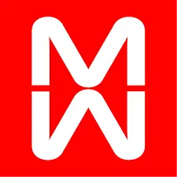

La Feltrinelli
La collaborazione di Bob Noorda con la casa editrice Feltrinelli risale agli inizi degli anni sessanta con Giangiacomo Feltrinelli. Successivamente è Inge Feltrinelli a proporre di ridefinire completamente l’immagine coordinata della società. Il progetto parte con la progettazione grafica della collana editoriale “Universale Economica” Feltrinelli e con il disegno di un nuovo marchio e di un nuovo logotipo. Bob Noorda decide di progettare la lettera F ruotata di 45 gradi e tagliata verticalmente.

Bob Noorda, 1963
Marchio
Altri Progetti

Agip
Bob Noorda, 1972
Marchio

Regione Lombardia
Bob Noorda, 1974
Marchio

Biennale di Venezia
Bob Noorda, 1966
Marchio

Lisi
Bob Noorda, 1967
Copertina